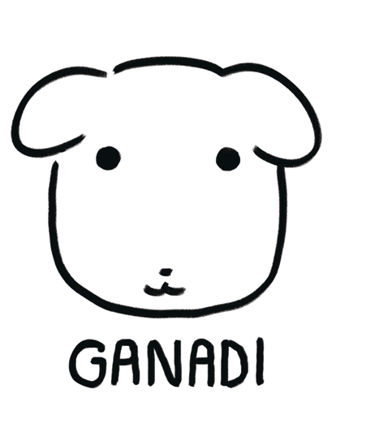

🐶
도전자 닉네임을 입력해 주세요
최종 정확도가 오른쪽 Top 100 랭킹에 등록됩니다.
도전자
사용 획수
0 / 6
그림 그리기 획수 : 최대 6회
가나디 얼굴을 그려주세요!
START를 누르면 가나디가 3초 동안 나타납니다.
사라진 뒤 글자는 빼고 얼굴만 그려주세요!
잘 기억하세요! 3초

※ 아래 GANADI 글자는 빼고 얼굴만 그려주세요
정확도 측정 결과
0.00%
순위 계산 중...